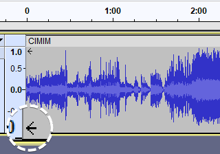

Audio Tracks and Clips
- Each clip can be moved around independently of other clips.
- Clip names can be edited to make them more meaningful.
Clips are contained in audio tracks.
- An audio track can be empty but usually contains one or more clips.
- All the clips in an audio track are affected by settings in that track, including:
- gain settings
- pan settings
- real-time effects
Contents
- Channels, Clips and Tracks
- Trimming a Clip
- Renaming Clips
- Moving Clips
- Moving a Clip Between Tracks
- Creating Clips
- Merging or joining Clips
- Navigating and selecting Clips
- Track colors
- Moving colored Clips
- Smart Clips
Channels, Clips and Tracks
The terms channel, clip and track can be a little confusing, especially because some applications may use them to mean slightly different things. Within Audacity, the meaning is as follows:
- A channel is for audio recording (input) or playback (output). Audacity can record two channels of input (stereo), and more if you have a special sound card or audio device that supports more than two simultaneous channels. Audacity supports only two channels of playback (output), no matter what kind of audio hardware you have.
| We won't talk about channels any more on this page. We just wanted to make it clear what the word "channel" means within Audacity. |
- A clip is a section of audio inside an audio track. Note that a non-empty audio track contains at least one clip.
- An audio track is like one instrument in your symphony, or one voice in your podcast. You can add more tracks, and all of them will be mixed together to create your final output, but during editing you can manipulate each track independently. If you have an interview recorded with two microphones, each one can go in a separate track. If you have background music, that could go in a third track. If a track contains only one clip, you can move the entire contents of the track along the timeline. If the track is split into multiple clips you can move each of those clips independently.
| The word "track" is often used to refer to a "song" as in "the third track on the CD" or "the latest track from MyFavouriteBand". Just remember that the word "track" has this specific meaning within Audacity (and all other music production software). |
Trimming a Clip

You can trim a clip by dragging near the upper corner of its left and right edges. Alternatively you can use .
- Doing so will hide the waveform that goes beyond it (as opposed to fully deleting it).
- If you make some edits to the clip and then later decide to un-trim it, you can just grab the upper corner again and extend it.
- The hidden parts will not be played or exported.
- Effects applied to a trimmed clip will not affect the hidden parts of the trimmed clip, only the visible portion of the clip is affected.
| Note carefully that there no visual cue to indicate that a clip has hidden audio data. |
Renaming Clips
Clips initially take their name from the track in which they are created. The clip names can be edited to make them more meaningful.
To edit a clip double-click in the clip-handle drag-bar and the clip name will open up for editing.
Alternatively you can select the clip, then right-click in the clip and use the context menu which has an entry for .
Moving Clips
To move a clip, simply drag and drop it using the Clip-handle drag-bar (the light area with the rounded corners) at the top of the clip.
If you have snapping turned on the moved clips will snap to your preferred snap time format.
To move multiple clips at once, select all of the clips you want to move using the Selection Tool , then drag a Clip-handle within the selected region to move all selected clips. This will also move the selection area with it.
, then drag a Clip-handle within the selected region to move all selected clips. This will also move the selection area with it.
If you click a Clip-handle drag-bar outside of the selected area, the selected area will stay where it is and you'll only move one clip.
Moving stereo Clips
In most cases time-shifting a clip in a stereo track will work exactly the same way as in a mono track. Most stereo tracks will have continuous audio in both channels and time-shifting a clip will move both channels equally.
In cases where they aren't, the following rules apply:
- If you grab a Clip-handle of a clip at a position where it stands alone (meaning there is no other clip in the stereo track), you will only move the clip you're grabbing.
- If you grab a Clip-handle at a position where the other channel also has a clip, you will move both channels.
- If you always want to drag overlapped left-and right-channel clips simultaneously wherever you click in the clip, you can enable
- If you want to move clips in a stereo track independently from each other, you need to split the stereo track into mono tracks first.
Moving to negative time
If an audio track is dragged to the left (earlier on the Timeline) audio data may be hidden before the start of the track. This is indicated by the presence of two arrows at the left edge of the track.
- 
Audio before time zero is not exported unless that audio is explicitly selected and used, or unless Export Multiple is used with "Split files based on Tracks". In this Export Multiple by tracks case, the entire audio of each track is exported, including that behind zero, regardless of any selection.
Moving a Clip Between Tracks
You can move a clip to a different track, but there must be room for the clip between the clips on the second track.
Creating Clips
When you record some audio or import audio from a file, you get a single track containing one clip. In many cases there are natural gaps in the audio - silence between sentences or pauses between phrases in music. Those are good candidates for splitting the track into multiple clips, allowing you to move or otherwise manipulate those clips independently. There are several ways to create multiple clips in a track.
- to split the clip at the current cursor position or selection region.
- > Split clip context menu to split the clip at the current cursor position or selection region.
The following commands only work on a selection region in an existing track or clip:
- moves the selected audio to the same position in a new track at the bottom of the project.
- removes the selected audio without shifting the following audio.
- removes the selected audio to the Audacity clipboard without shifting the following audio.
- creates clips either side of absolute silences.
The following operations will create a new clip:
- ; creates a new clip at the paste position.
- ; creates a new clip in a new track based on the current selection.
- A selection in a clip

- After (note: the clips have been renamed for clarity)

- Clip "C2" can be dragged into a new audio track and then split into three clips (note: the clips have been renamed for clarity)

Note the double-headed arrow cursor to the right of clip "C2c" indicating that it can be expanded
- After expanding clip "C2c"

When a new clip is created from an existing clip, the new clip contains all the audio contained in the clip it was created from
- Clip "C2b" can be dragged into a new audio track

- Clip "C2b" (now in the third audio track) can be expanded both left and right.

It's easy to select all the audio of a given clip.
|
Merging or joining Clips
An adjacent pair of clips may be merged into one clip by clicking on the split line. You can perform a similar join action without a mouse by selecting across one or more split lines then using to join the two clips into one.
A number of menu items and corresponding keyboard shortcuts can be used to select and navigate between clips.
Making selections in clips:
- - shortcut Alt + ,
- - shortcut Alt + .
Navigating between clips
Waveform colorways
You can optionally change the colorway of the waveforms displayed in your project. The setting is per track and not per project so you can have multiple colorways in the same project as in the image below.
Four colorways are available with the color selection made from the dropdown menu in the track's Track Control Panel.

Moving colored Clips
A Clip takes on the selected color of the waveform that it originates in.
When a clip is moved into a different colored track, the clip retains its original color.

- Blue clip in the top track with sufficient space in the bottom, red track

- The blue clip has been moved into the red track and retains its blue color
| Changing the color in the Track Dropdown Menu will change the colors of all clips in that track, regardless of their current colors.
This does make it a bit awkward if for example, you have a track:
|